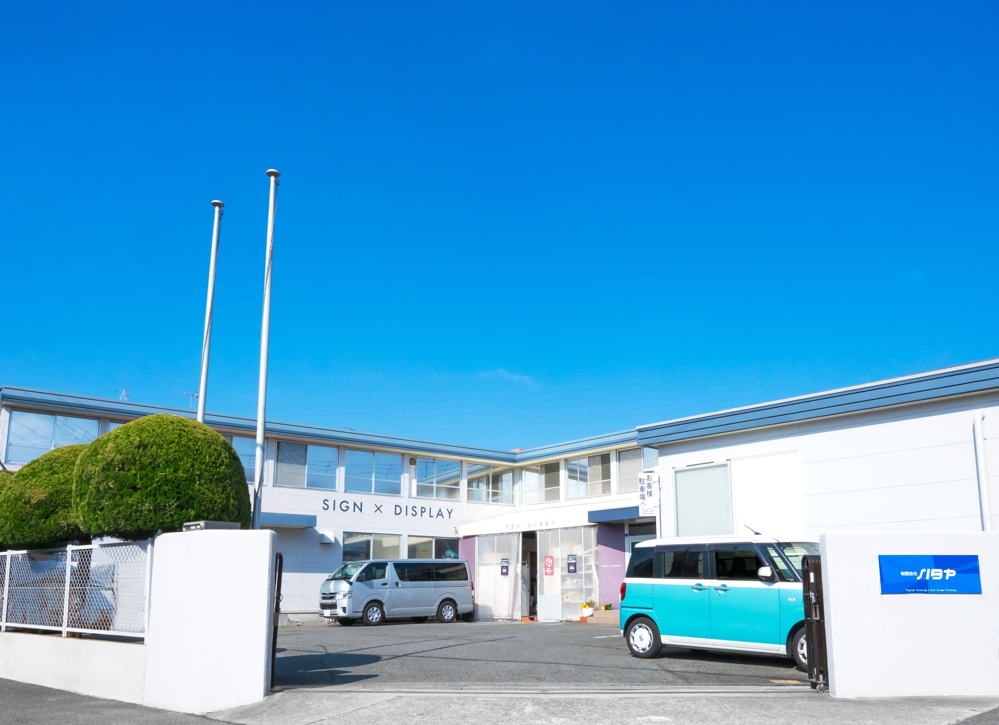

|  | ||||||||
{{first_name}} 様、導線改善につながったサイン刷新の実例です商業施設の館内サインを刷新し、目的地までの案内時間が約30%短縮されました。視認性と一貫性を高める デザインに加え、施工安全・工程短縮にも配慮しています。
|
||||||||
| 施工詳細とお見積もり相談 | ||||||||
実施概要
|
||||||||
|
有限会社ハタヤ ｜ 兵庫県神戸市西区伊川谷町別府121-1 ｜ 078-974-9336
このメールは{{company_name}}様へのご案内です。 配信停止 / プライバシー |